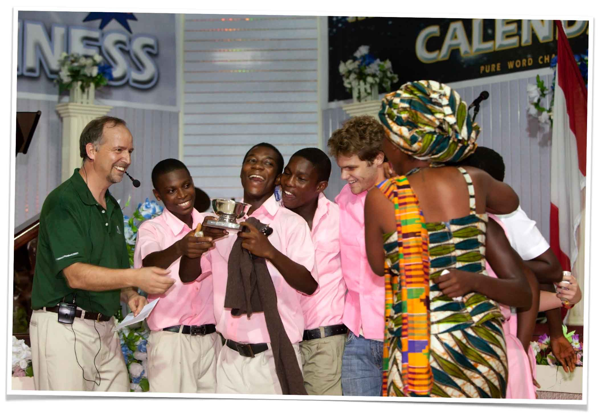

Research
It was important to ask these questions as we began the design process:
- Low-resource bootstrapping: What does it look like to be a bootstrapping startup in Ghana?
- Entrepreneurial journey: What does the entrepreneurial process look like?
- Perceptions about entrepreneurship: What perceptions do students have about entrepreneurship and entrepreneurs?
- Resource access: What resources do youth have access to?
- Technology: What technology do youth have access to?


User Interviews We talked to 10+ people who taught entrepreneurship in Ghana on previous trips.

Competitive and Comparative Analysis We reviewed 30+ lesson plans for teaching entrepreneurship to high school students.
Expert on Team Team leader has taught entreprenuership in Africa for 10+ years.